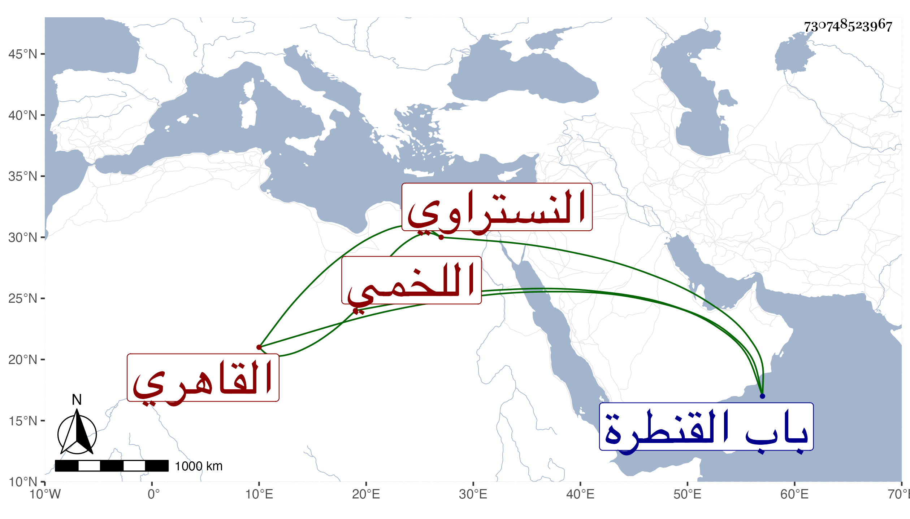

0902Sakhawi.DawLamic.ITO20230111-ara1.EIS1600.730748523967
Biography ID: 730748523967
55
أنس ابنة عبد الكريم بن أحمد بن عبد العزيز بن عبد الكريم بن أبي طالب بن علي بن سيدهم أم الكرم ابنة الكريمي اللخمي النستراوي الأصل القاهري أخت آمنة الماضية قريبا وزوج شيخنا ويعرف أبوها بابن عبد العزيز وأمها هي سارة ابنة ناصرالدين محمد بن أنس ابنة منكو تمر نائب السلطنة وصاحب المدرسة والقاعة المتجاورتين بداخل باب القنطرة . ولدت تقريبا سنة ثمانين وسبعمائة لأن والدها وصفها في وصيته المؤرخة بسنة تسعين بالعشارية وأسمعها زوجها من شيخه العراقي المسلسل وكذا من الشرف بن الكويك مع ختم صحيح البخاري وأجاز لها أبو هريرة ابن الذهبي وأبو الخير بن العلائي وخلق ، وحجت صحبة زوجها ثم بمفردها في حياته وجاورت حينئذ وحدثت بحضور شيخنا وبعده قرأ عليها الفضلاء وكانت تحتفل بذلك وتكرم الجماعة غالبا وخرجت لها أربعين حديثا عن أربعين شيخا قرأتها عليها بحضوره أيضا وحملت عنها أشياء ، وكانت رئيسة دينة كريمة راغبة في الخير مجابة الدعاء ويقال إنها رأت ليلة القدر . ولم تتزوج غير شيخنا . ماتت في ربيع الأول سنة سبع وستين وصلى عليها بجامع المارداني ودفنت بتربة سلفها بالقرب من الجامع عند أولادها . وقد أطلت ترجمتها في الجواهر رحمها الله وإيانا .
